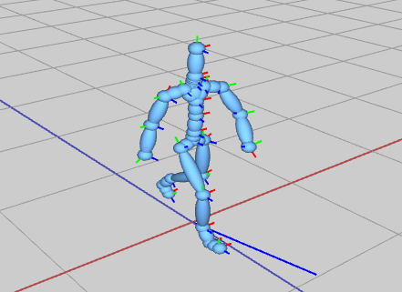

Step 2: Visualize the heading
The goals of this lab are to
This assignment has been added to your AnimationToolkit repository. To get the source, run
> cd cs56/AnimationToolkit > git pull > cd build > cmake .. > make
You should now have a new directory under assignments called a7-motion.
Check that your basecode has core functionality running properly by running the motion viewer.
To run the demo from the build directory, type
build> ../bin/a7-motionviewer
When you open the viewer, it opens a character along with several example motions.
The camera can be controled with the mouse:
The player control panel on the top left can be used to load and play files.
The panel at the bottom left can be used to load different BVH files.
For this question, use the APIs in AMotion, APose and ASkeleton to finish the implementation in assignments/a7-motion/APracticeMotion.cpp.
AMotion is defined in libsrc/animation/AMotion.h
ASkeleton is defined in libsrc/animation/ASkeleton.h
APose is defined in libsrc/animation/APose.h
To run the demo from the build directory, type
build> ../bin/a7-practice
AMotion implements a fixed-framerate motion loaded from a BVH
file. A motion stores a sequence of a APose. Each APose stores the
state of the skeleton on that frame . Because AMotion represents motions with
a fixed framerate, the time between each key is 1/fps. Fps stands for frames
per second. For the characters in this class, poses contain the root position
and the rotations for each joint. All pose data is always in local coordinates.
The order of the joint rotations in APose matches the IDs in
ASkeleton. For example, the joint with ID = 5 has its local rotation
stored in jointRots[5].
In this question, you will implement dancers performing the 80s classic: Thriller! Implement your solution in assignments/a7-motion/AThriller.cpp. You will use the methods in ASkeletonDrawer defined in libsrc/ui/ASkeletonDrawer.h for this question. Note that to draw multiple characters with the same synchronized animations, we only need one skeleton and multiple drawers!
To run the demo from the build directory, type
build> ../bin/a7-thriller
Your solution should have the following features:
For this question you will implement a simple character controlled with the keyboard. We will use the motion from motions/Beta/walking.bvh to animate the body but the root will be animated based on keyboard input.
To run the demo from the build directory, type
build> ../bin/a7-controller
Modify the pose of the skeleton so that the character's body animates but does not move.
Step 2: Visualize the heading
The user can change the heading of the character by pressing 'a' and 'd' or the left and right arrow buttons.
When the user pressing 'a' or left, the heading turns left. To start, draw the heading on the floor at the
location of the character. Hint: use the global position of the character to compute endpoints for a line.
Use ADrawLine to draw the direction of the heading.

Step 3: Turn the body to match the heading
Modify the pose of the skeleton so that the character rotates with the heading

Step 4: Set the camera to follow the character
When we update the character, modify the camera position and look target so that it's behind the character's head. Use the global position of the character's head to compute positions for the camera. You will need global positions for the camera's position and for the target where the camera is looking.
AVector3 globalPos; AVector3 globalLookPos; ... ACamera* camera = getCamera(); camera->set(globalPos, globalLookPos, AVector3(0,1,0) /*up*/);

Modify the pose of the skeleton so that the character both rotates and moves with the heading.
Update the position of the skeleton's root similarly to how you animated
a particle to move in a straight line. In this case, velocity is based on the heading and the
desired speed.

In this questio, you will complete the butterfly demo. Put your solution in assignments/a7-motion/AButterfly.cpp
To run the demo from the build directory, type
build> ../bin/a7-butterfly

Option 1 (up to 5 points) Create a cool demo using motion capture and/or unique characters.

Option 2 (5 points) Extend the controller from question 4 to support jump with spacebar.
Be sure to include a video of your demo for full credit!